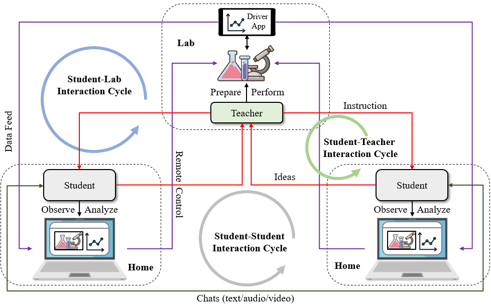
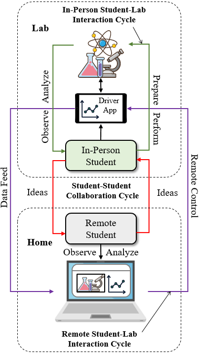
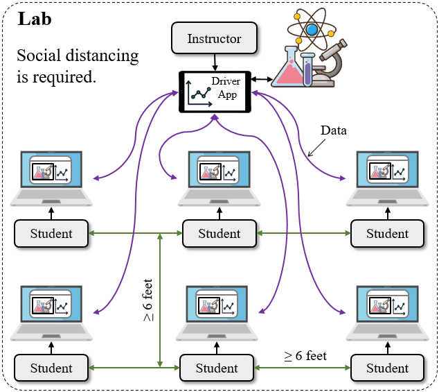

Three ways of using Telelab
Three classroom models for real-time remote experimentation — remote inquiry, collaborative inquiry in hybrid classes, and collective inquiry in in-person classes.
The ability of Telelab to support users in conducting their own experiments and distributing real-time data to others engenders three types of applications described below. In all of them, the experimental data are presented to all stakeholders in the forms of interactive visualizations so they can rapidly explore the data and recognize patterns.
1. Remote inquiry in a completely online class
The learning and teaching model of remote inquiry consists of three interlocked cycles of interactions — student-lab, student-teacher, and student-student — that mimic actual experiences in a science lab where students are physically present to participate in hands-on experiments, often in a collaborative fashion. In the student-lab cycle, students observe a remote experiment and analyze incoming data on their own computers. If the experiment is being conducted in real time, they can even remotely control it and obtain new data. In the student-teacher cycle, students receive instruction from the teacher about remotely analyzing and controlling an experiment, but they can also propose their own ideas to be tested in the teacher's next step of experimentation. In the student-student cycle, students can discuss experimental results with peers through text/audio/video chats.

2. Collaborative inquiry in a hybrid class
Hybrid learning is an educational model where teachers instruct both in-person and remote students at the same time. As many schools allow students to choose between learning from home and learning at school, hybrid classes are now commonplace. Under a hybrid circumstance, each student in the lab can collaborate with a remote partner to conduct an experiment in tandem. Telelab provides a handy tool to streamline hybrid learning in the lab: data are automatically transmitted behind the scenes to remote partners and visualized as intuitive images or graphs on their computers. Students in a hybrid group can all concentrate on observing the experiment unfold and making sense of incoming data. Such a joint investigation may inspire the group to raise even more what-if questions, debate their relevance and testability, and delegate the student in the lab to pursue some of them, starting a new iteration of collaborative inquiry.

3. Collective inquiry in a completely in-person class
Telelab can also be used when the teacher and all students are in the same room. In this case, the technology can provide a way for students to observe and analyze an ongoing experiment performed by the teacher without leaving their desks and violating social distancing rules. Compared with projecting the results to a large screen in front of the entire class, the technology can be imagined as a system of "distributed smartboards" — each student has her/his own screen for observing and interacting with the experiment while it is being conducted.
